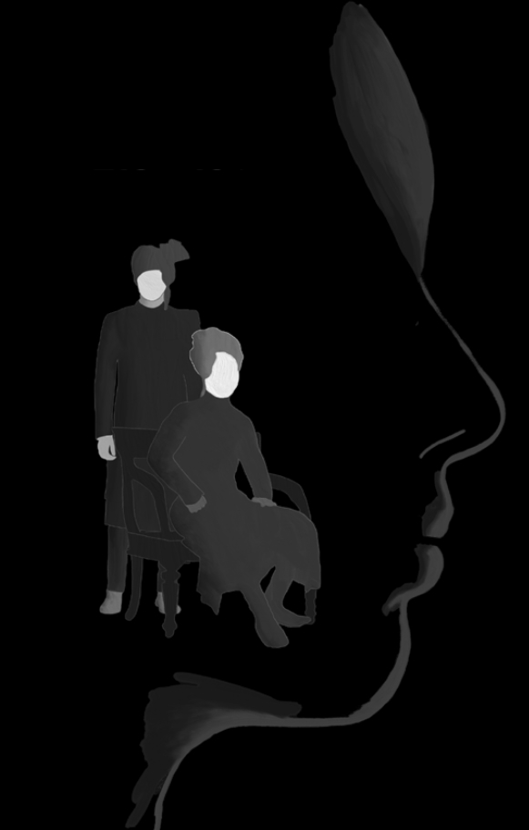

Nick Gallagher
Film & Media Composer | Sound Designer
Selected Works
The Knife's Edge
Cello Suite
Regression of Vision
Building Strength
About

I am a composer tailored to visual storytelling. With a focus on striking arrangements and emotional resonance, I create soundscapes that serve the narrative. My work balances thematic depth with technical precision.
Based in Chicago, IL
Behind the Scenes


Selected Credits
-
 Looking ForwardDirector: Devon Gulati2026
Looking ForwardDirector: Devon Gulati2026 -
NAZARDirector: Sean Sankalp Raju2025
Currently available for new projects.
Email Me